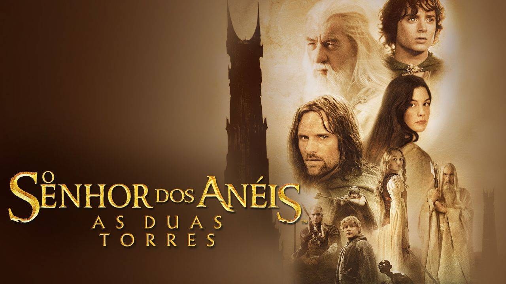
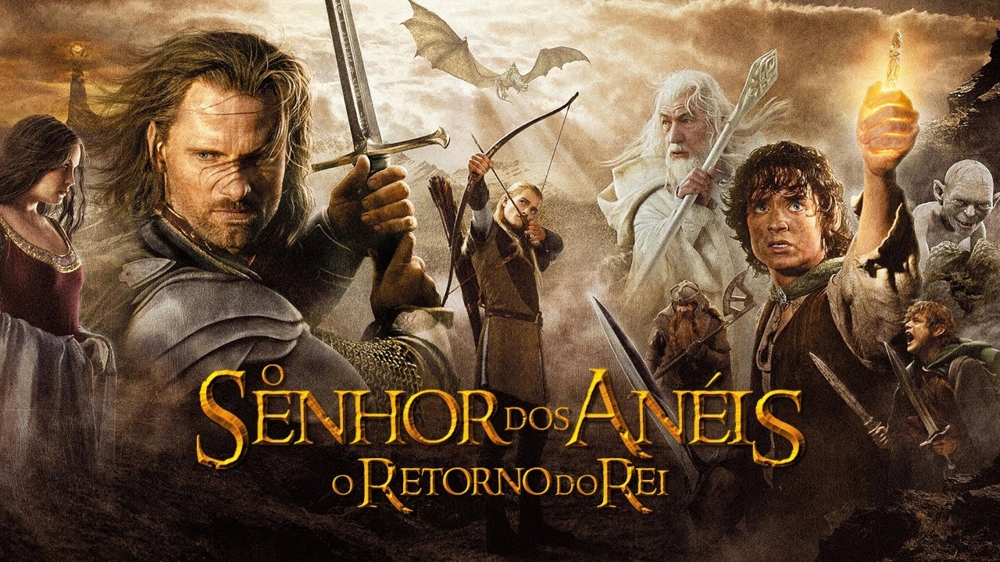
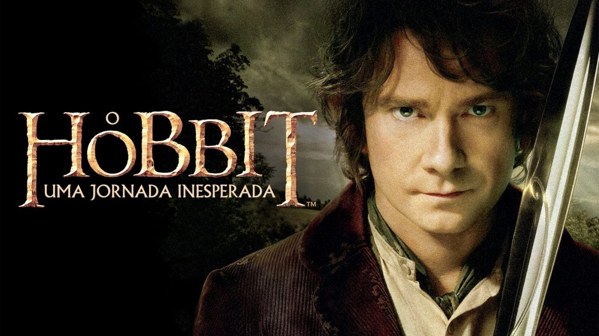
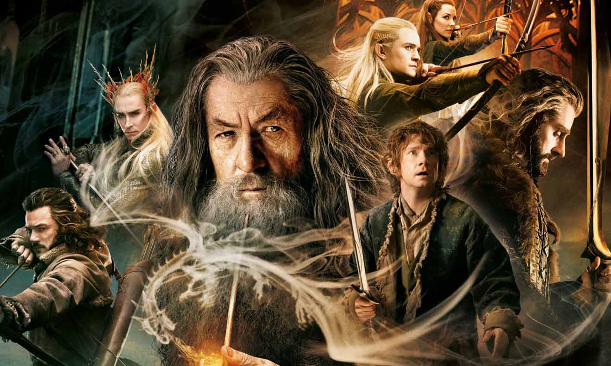
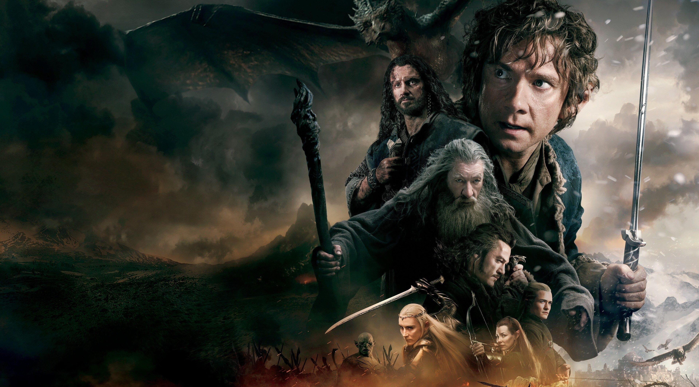

O Senhor dos Anéis : A Sociedade do Anel
Em uma terra fantástica e única, um hobbit recebe de
presente
de seu tio um anel mágico e maligno que precisa ser destruído antes que caia nas mãos do
mal.
Para isso, o hobbit Frodo tem um caminho árduo pela frente, onde encontra perigo, medo e
seres
bizarros. Ao seu lado para o cumprimento desta jornada, ele aos poucos pode contar com
outros
hobbits, um elfo, um anão, dois humanos e um mago, totalizando nove seres que formam a
Sociedade
do Anel.
Data de lançamento: 1 de janeiro de 2002 (Brasil)
Diretor: Peter Jackson
Continuação: O Senhor dos Anéis: As Duas Torres
Orçamento: 93 milhões USD
Música composta por: Howard Shore
Bilheteria: 897,7 milhões USD

O Senhor dos Anéis : As Duas Torres
Após a captura de Merry e Pippy pelos orcs, a Sociedade do
Anel
é dissolvida. Frodo e Sam seguem sua jornada rumo à Montanha da Perdição para destruir o
anel e
descobrem que estão sendo perseguidos pelo misterioso Gollum. Enquanto isso, Aragorn, o elfo
e
arqueiro Legolas e o anão Gimli partem para resgatar os hobbits sequestrados e chegam ao
reino
de Rohan, onde o rei Theoden foi vítima de uma maldição mortal de Saruman.
Data de lançamento: 27 de dezembro de 2002 (Brasil)
Diretor: Peter Jackson
Prêmios: Oscar de Melhores Efeitos Visuais
Bilheteria: 947,5 milhões USD
Orçamento: 94 milhões USD
Lançamento em DVD: 26 de agosto de 2003

O Senhor dos Anéis : O Retorno do Rei
O confronto final entre as forças do bem e do mal que lutam
pelo controle do futuro da Terra Média se aproxima. Sauron planeja um grande ataque a Minas
Tirith, capital de Gondor, o que faz com que Gandalf e Pippin partam para o local na
intenção de
ajudar a resistência. Um exército é reunido por Theoden em Rohan, em mais uma tentativa de
deter
as forças de Sauron. Enquanto isso, Frodo, Sam e Gollum seguem sua viagem rumo à Montanha da
Perdição para destruir o anel.
Data de lançamento: 25 de dezembro de 2003 (Brasil)
Diretor: Peter Jackson
Prêmios: Oscar de Melhor Filme
Indicações: Oscar de Melhor Filme
Bilheteria: 1,146 bilhão USD
Orçamento: 94 milhões USD

O Hobbit : Uma Jornada Inesperada
Como a maioria dos hobbits, Bilbo Bolseiro leva uma vida
tranquila até o dia em que recebe uma missão do mago Gandalf. Acompanhado por um grupo de
anões,
ele parte numa jornada até a Montanha Solitária para libertar o Reino de Erebor do dragão
Smaug.
Data de lançamento: 14 de dezembro de 2012 (Lituânia).
Diretor: Peter Jackson
Continuação: O Hobbit: A Desolação de Smaug
Bilheteria: 1,017 bilhão USD
Orçamento: 180 milhões USD
Indicações: MTV Movie Award: Melhor Performance Assustadora

O Hobbit : A Desolação de Smaug
Ao lado de um grupo de anões e de Gandalf, Bilbo segue em
direção à Montanha Solitária, onde deverá ajudar seus companheiros a retomar a Pedra de
Arken. O
problema é que o artefato está perdido em meio a um tesouro protegido pelo temido dragão
Smaug.
Data de lançamento: 13 de dezembro de 2013 (Brasil).
Diretor: Peter Jackson
Bilheteria: 959 milhões USD
Música composta por: Howard Shore
Continuação: O Hobbit: A Batalha dos Cinco Exércitos
Indicações: Empire Award: Melhor Filme

O Hobbit : A Batalha dos Cinco Exércitos
O dragão Smaug lança sua fúria ardente contra a Cidade do
Lago
que fica próxima da montanha de Erebor. Bard consegue derrotá-lo, mas, rapidamente, sem a
ameaça
do dragão, inicia-se uma batalha pelo controle de Erebor e sua riqueza. Os anões, liderados
por
Thorin, adentram a montanha e estão dispostos a impedir a entrada de elfos, anões e orcs.
Bilbo
Bolseiro e Gandalf tentam impedir a guerra.
Data de lançamento: 7 de dezembro de 2014 (Brasil)
Diretor: Peter Jackson
Bilheteria: 962,2 milhões USD
Música composta por: Howard Shore
Indicações: Empire Award: Melhor Filme
Distribuído por: Warner Bros. Pictures